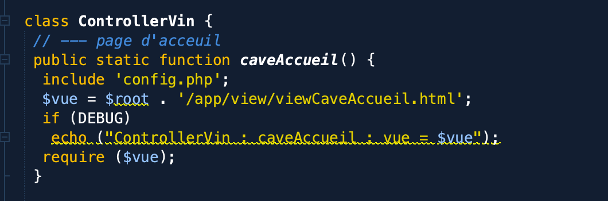

d'amélioration continue
Je comprend que c'est un cours d'introduction et le php/html est super pour comprendre l'architechture d'un projet web. Cela aurait pu être pas mal de finir le semestre par une ouverture sur le javascript (AJAX,Jquerry, nodeJS, etc...) et les framework moderne (Angular, React, View)
Pour les futurs projets pourquoi pas pousser plus à l'utilisation d'autres types de données (image, vidéo, fichiers, etc...)
Cela permetterait de gérer les intéractions avec le site qui ne nécéssitent pas d'accès spécifique à la base de données ou un model, par exemple pour la fonction cavaAccueil() qui n'a rien à faire dans ControllerVin
